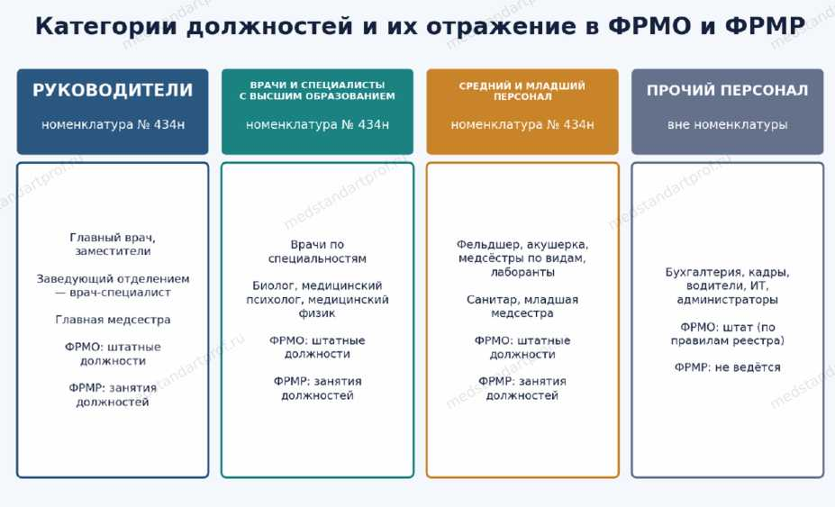
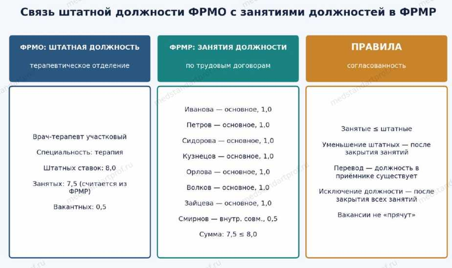
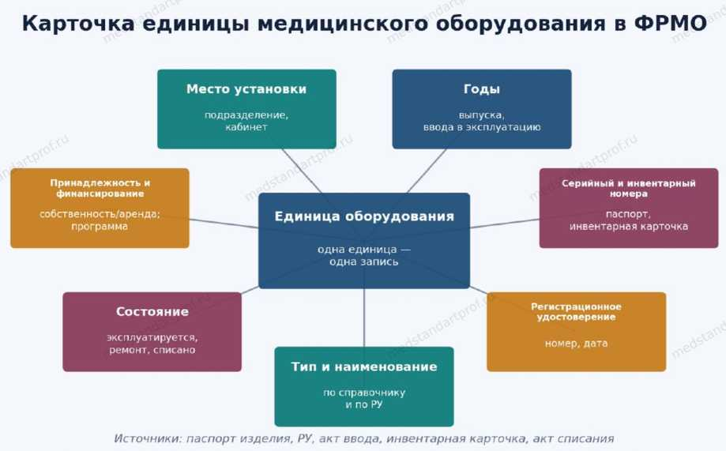
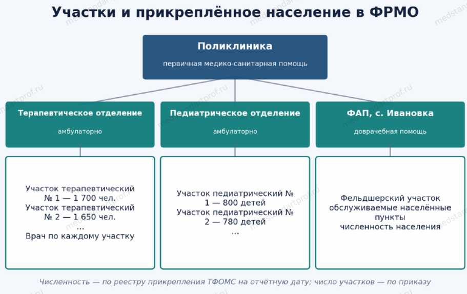
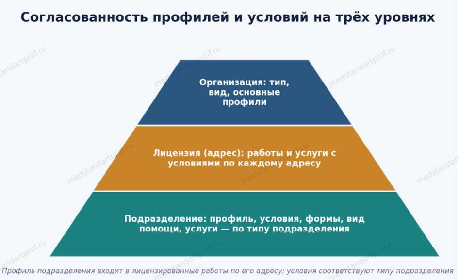

Раздел «Штатное расписание» — мост между ФРМО и ФРМР. Каждая запись о трудоустройстве работника ссылается на штатную должность конкретного подразделения; по соотношению штатных и занятых ставок рассчитывается укомплектованность, которая используется при планировании кадров, распределении мер поддержки и оценке организации. Ошибки в этом разделе — самая частая причина невозможности внести сведения о работнике.
Цель лекции — освоить правила формирования раздела «Штатное расписание» в ФРМО: соответствие штатному расписанию организации и номенклатуре должностей, учёт ставок, категории персонала, связь с занятиями должностей в ФРМР и порядок изменений.
Штатное расписание — локальный документ, утверждаемый руководителем, который устанавливает структуру, штатный состав и численность организации с указанием подразделений, должностей, количества штатных единиц (ставок) и окладов. В ФРМО переносятся подразделения, должности и количество ставок; оклады и надбавки в реестр не вносятся.
Штатное расписание должно быть приведено в соответствие с реестром по двум параметрам до начала внесения:
1. Подразделения — совпадают с внесёнными в раздел «Структурные подразделения».
2. Наименования должностей — соответствуют номенклатуре должностей медицинских и фармацевтических работников; для немедицинских должностей — квалификационным справочникам и профессиональным стандартам.
Если наименование должности в штатном расписании не соответствует номенклатуре («врач УЗИ», «медсестра», «зав. отделением» без указания врачебной должности), оно не может быть выбрано из справочника реестра. Решение — приведение штатного расписания в соответствие с номенклатурой, что одновременно является требованием статьи 57 Трудового кодекса (наименование должности, с которой связаны льготы и ограничения, должно соответствовать квалификационным справочникам или профессиональным стандартам).
С 1 сентября 2026 года применяется номенклатура должностей медицинских и фармацевтических работников, утверждённая приказом Минздрава России от 14.05.2026 № 434н, заменившая приказ от 02.05.2023 № 205н. Номенклатура специальностей утверждена приказом от 14.05.2026 № 43 5н (разделы для высшего и среднего образования), квалификационные требования — приказом № 436н. Переход на новые номенклатуры сопровождается обновлением справочников реестра; должности, исключённые новой номенклатурой, сохраняются в справочнике с датой окончания действия, а штатные расписания подлежат приведению в соответствие.
Номенклатура делит должности на группы:
• должности руководителей — главный врач (директор, начальник, заведующий), заместители руководителя, заведующие структурными подразделениями (с указанием врачебной должности), главная медицинская сестра, главная акушерка, главный фельдшер;
• должности специалистов с высшим образованием — врачи по специальностям (врач-терапевт, врач-терапевт участковый, врач общей практики (семейный врач), врач-педиатр, врач-хирург и другие), а также специалисты с высшим немедицинским образованием, допущенные к медицинской деятельности (биолог, медицинский психолог, медицинский физик, эмбриолог и другие);
• должности специалистов со средним образованием — фельдшер, акушерка (акушер), медицинская сестра по видам, медицинский лабораторный техник, рентгенолаборант, зубной техник и другие;
• должности младшего медицинского персонала — санитар, младшая медицинская сестра по уходу за больными, сестра-хозяйка;
Должности, не включённые в номенклатуру (специалист по кадрам, бухгалтер, водитель, инженер, программист, администратор, регистратор — если не «медицинский регистратор»), являются немедицинскими; они могут вноситься в штатное расписание ФРМО как прочий персонал (по правилам интерфейса), но их занятия должностей в ФРМР не ведутся.

Рисунок 1. Категории должностей и их отражение в ФР МО и ФРМР
|
Поле |
Содержание |
Правило |
|
Подразделение |
Элемент структуры, в котором создана должность |
Должность создаётся на том уровне иерархии, где фактически работают люди (как правило, отделение или кабинет) |
|
Должность |
Из справочника номенклатуры |
Точное наименование по штатному расписанию, приведённому к номенклатуре |
|
Категория персонала |
Руководители, врачи, средний, младший, фармацевтический, прочий |
Определяется автоматически по должности либо выбирается |
|
Специальность |
Из номенклатуры специальностей |
Для врачей и среднего персонала — специальность, по которой требуется допуск на данной должности; для «заведующий отделением — врач-...» — врачебная специальность |
|
Количество штатных ставок |
Число с точностью до 0,25 (ОД 0,75, 1,0, 1,5 и т. д.) |
По штатному расписанию |
|
Признаки |
Участие в ОМС, платные услуги, финансирование (бюджет, ОМС, внебюджет) — при наличии полей |
По штатному расписанию и учётной политике |
|
Даты |
Введения, изменения, исключения должности |
По приказу об утверждении (изменении) штатного расписания |
|
Занятые ставки |
Рассчитываются из ФРМР |
Не вносятся вручную |
1. Одна строка штатного расписания — одна запись. Если в штатном расписании в одном подразделении две строки с одинаковой должностью (например, «врач-терапевт участковый» 5,0 ставок и «врач-терапевт участковый» 1,0 ставка с иным финансированием), в реестре допустимо объединить их в одну запись с суммарным числом ставок, если интерфейс не различает признаки; при различии признаков — две записи.
2. Заведующие. Должность «заведующий отделением — врач-терапевт» вносится как единая должность из номенклатуры с указанием врачебной специальности; отдельная ставка «врач-терапевт» для заведующего не создаётся, если она не предусмотрена штатным расписанием.
3. Вакансии. Штатные ставки, не занятые работниками, отражаются как вакантные автоматически (штатные минус занятые). Специально «прятать» вакансии, уменьшая штатные ставки в реестре, недопустимо: это искажает укомплектованность и противоречит штатному расписанию.
4. Совместители. Занимают ставки тех же штатных должностей; внешний совместитель на 0,5 ставки занимает 0,5 ставки штатной должности. Отдельные «должности для совместителей» не создаются.
5. Временные должности. Должности, введённые на срок (на период проекта, отпуска по уходу за ребёнком основного работника — если это оформлено как отдельная штатная единица), вносятся с датами.
6. Немедицинские должности. Вносятся, если это предусмотрено правилами реестра для целей учёта общей численности; в противном случае — только медицинские и фармацевтические.
Занятие должности в карточке работника содержит ссылку на штатную должность (подразделение + должность) и ставку. Правила согласованности:
• сумма ставок по всем занятиям данной должности в ФРМР не должна превышать число штатных ставок в ФРМО; превышение блокируется контролем либо выявляется сверкой;
• при уменьшении штатных ставок в ФРМО сначала закрываются или уменьшаются занятия в ФРМР;
• при переводе работника в другое подразделение в ФРМО должна существовать должность в подразделении-приёмнике;
• при исключении должности из штатного расписания все занятия по ней закрываются (перевод или увольнение) до закрытия должности в ФРМО.
Показатель укомплектованности (занятые ставки / штатные ставки) и коэффициент совместительства (занятые ставки / физические лица) рассчитываются по этим данным и используются органами управления здравоохранением.

Рисунок 2. Связь штатной должности ФРМО с занятиями должностей в ФРМР
|
Событие |
Действия в ФРМО |
Предварительные действия в ФРМР |
|
Введение новой должности |
Создать запись с датой введения и числом ставок |
— |
|
Увеличение числа ставок |
Изменить число ставок с датой |
— |
|
Уменьшение числа ставок |
Изменить число ставок с датой |
Закрыть или уменьшить занятия так, чтобы занятые <= штатные |
|
Переименование должности (приведение к номенклатуре) |
Если справочник допускает изменение должности в записи — изменить с датой; иначе — создать новую должность, перевести занятия, закрыть старую |
Перевод занятий на новую должность |
|
Перенос должности в другое подразделение |
Создать должность в новом подразделении, перевести занятия, закрыть в старом |
Перевод занятий |
|
Исключение должности |
Закрыть запись с датой |
Закрыть все занятия |
Основание для всех изменений — приказ об утверждении (изменении) штатного расписания; дата в реестре — дата вступления изменения в силу по приказу.
Ежемесячная сверка (Чек-лист 2 курса):
1. Выгрузить (или просмотреть) штатное расписание из ФРМО по подразделениям и должностям.
2. Сопоставить с действующим штатным расписанием организации: наличие всех должностей, число ставок, подразделения.
3. Проверить, что занятые ставки не превышают штатные по каждой должности.
4. Проверить наименования должностей на соответствие номенклатуре (особенно после её обновления).
5. Проверить, что у каждой врачебной и средней должности указана специальность.
6. Зафиксировать расхождения и устранить с указанием причины.
• Штатное расписание внесено на уровень организации без привязки к подразделениям.
• Наименования должностей не по номенклатуре; «ближайшие» варианты выбраны произвольно.
• Число штатных ставок занижено под фактическую занятость («чтобы не было вакансий»).
• Совместители внесены как отдельные должности.
• После обновления номенклатуры должности с истёкшим сроком действия не переведены на новые.
• Изменения штатного расписания вносятся «задним числом» без дат либо не вносятся вовсе; реестр отражает штатное расписание многолетней давности.
Раздел «Штатное расписание» ФРМО формируется по утверждённому штатному расписанию организации, приведённому к номенклатуре должностей (с 01.09.2026 — приказ № 434н) и привязанному к элементам структуры. Каждая запись содержит должность из справочника, специальность, число штатных ставок и даты; занятые ставки рассчитываются из ФРМР, поэтому изменения штатного расписания в ФРМО выполняются в согласовании с занятиями должностей. Ежемесячная сверка со штатным расписанием организации предотвращает расхождения, которые блокируют внесение сведений о работниках и искажают показатели укомплектованности.
1. Приказ Минздрава России от 14.05.2026 № 434н «Об утверждении Номенклатуры должностей медицинских работников и фармацевтических работников» (применяется с 01.09.2026; ранее — приказ от 02.05.2023 № 205н).
2. Приказ Минздрава России от 14.05.2026 № 435н «Об утверждении Номенклатуры специальностей...» (применяется с 01.09.2026).
3. Приказ Минздрава России от 14.05.2026 № 436н «Об утверждении квалификационных требований к медицинским и фармацевтическим работникам» (применяется с 01.09.2026).
4. Трудовой кодекс Российской Федерации, статьи 15, 57, 60.1, 282.
5. Приказ Минздрава России от 28.10.2022 № 708н «Об утверждении порядка ведения персонифицированного учета...», пункт 21.
6. Постановление Правительства Российской Федерации от 09.02.2022 № 140 (с последующими изменениями и дополнениями).
7. Руководство пользователя ФРМО. — URL:
portal.egisz.rosminzdrav.ru.
Ресурсные разделы ФРМО описывают материальную базу организации: койки, оборудование, транспорт. Эти сведения используются при планировании программ оснащения, распределении средств национальных проектов, формировании статистики и проверке соответствия организации порядкам оказания помощи. В отличие от паспорта, ресурсные разделы меняются часто, и их актуальность требует налаженного взаимодействия с бухгалтерией и материально ответственными лицами.
Цель лекции — освоить состав и правила ведения разделов «Коечный фонд», «Медицинское оборудование» и «Транспорт» ФРМО, источники сведений и порядок отражения изменений.
Раздел ведётся организациями, оказывающими помощь в стационарных условиях и в условиях дневного стационара. Сведения используются для расчёта обеспеченности койками, планирования объёмов помощи по программе государственных гарантий, статистического наблюдения (форма № 30, раздел о коечном фонде) и в
специализированных регистрах.
|
Поле |
Содержание |
Источник |
|
Подразделение |
Отделение стационара или дневного стационара |
Структура |
|
Профиль коек |
Из справочника профилей коек (терапевтические, хирургические, кардиологические, для беременных и рожениц, реанимационные и другие) |
Приказ о коечном фонде; профили по номенклатуре коечного фонда |
|
Вид (условия) |
Круглосуточный стационар, дневной стационар(при стационаре, при поликлинике), стационар на дому (при наличии) |
Приказ |
|
Контингент |
Для взрослых, для детей |
Приказ |
|
Количество коек |
Сметное (штатное) число |
Приказ о коечном фонде |
|
Источник финансирования |
ОМС, бюджет, платные (при наличии поля) |
Учётная политика, приказ |
|
Признаки |
Койки паллиативной помощи, сестринского ухода, реанимационные, инфекционные боксированные, койки для перепрофилирования (при необходимости) |
Приказ |
|
Даты |
Ввода, изменения, закрытия |
Приказ |
Число фактически развёрнутых и занятых коек, если оно ведётся в реестре, отражается по данным оперативного учёта; смётное число — по приказу.
1. Основание — приказ руководителя об утверждении (изменении) коечного фонда с распределением по отделениям и профилям. Приказ издаётся на основании решения учредителя (для государственных организаций) и лицензии.
2. Профиль коек соответствует профилю отделения и лицензированным работам по адресу отделения.
3. Сумма коек по подразделению равна числу коек отделения по приказу; сумма по организации — общему коечному фонду.
4. Изменения (перепрофилирование, свёртывание, развёртывание) вносятся с датой по приказу в срок, установленный Положением о единой системе; при перепрофилировании в связи с эпидемической ситуацией — в день приказа.
5. Койки дневного стационара при поликлинике вносятся в подразделение «дневной стационар» с соответствующими условиями.
Раздел содержит сведения о единицах медицинского оборудования, подлежащих учёту в реестре. Перечень видов оборудования, подлежащего внесению, определяется справочником реестра (как правило оборудование, значимое для оснащения по порядкам оказания помощи и программам: диагностическое визуализирующее, эндоскопическое, лабораторное, реанимационное и наркозно-дыхательное,
физиотерапевтическое, стоматологические установки, оборудование операционных, оборудование для реабилитации и другие). Расходные материалы, инструменты, мебель не вносятся.
Уполномоченное лицо совместно с бухгалтерией составляет перечень оборудования организации, подлежащего внесению, по справочнику, и поддерживает его в актуальном состоянии.
|
Поле |
Содержание |
Источник |
|
Раздел и тип (вид) оборудования |
Из справочника видов оборудования |
Справочник, паспорт изделия |
|
Наименование |
Торговое наименование по регистрационному удостоверению |
Паспорт изделия, РУ |
|
Модель, производитель, страна |
По паспорту |
Паспорт |
|
Регистрационное удостоверение |
Номер и дата РУ Росздравнадзора на медицинское изделие |
РУ, реестр медицинских изделий |
|
Заводской (серийный) номер |
По паспорту |
Паспорт |
|
Инвентарный номер |
По данным бухгалтерского учёта |
Инвентарная карточка |
|
Год выпуска, дата ввода в эксплуатацию |
По паспорту, акту ввода |
Паспорт, акт |
|
Подразделение, кабинет |
Место установки |
Приказ, фактическое размещение |
|
Принадлежность |
Собственность (оперативное управление), аренда, лизинг, безвозмездное пользование |
Договоры |
|
Источник финансирования приобретения |
Бюджет, ОМС, национальный проект (с указанием), собственные средства |
Документы о закупке |
|
Стоимость (при наличии поля) |
По данным учёта |
Бухгалтерия |
|
Состояние |
Эксплуатируется, на ремонте, законсервировано, списано; даты |
Акты |
|
Количество |
Для однотипного оборудования, учитываемого суммарно (если допускается справочником) |
Инвентарные данные |
|
Нагрузка (при наличии поля) |
Число исследований (процедур)за год |
Статистика |

Рисунок 1. Карточка единицы медицинского оборудования в ФРМО
1. Одна единица — одна запись для оборудования, учитываемого поштучно (тяжёлое и дорогостоящее оборудование: томографы, рентгеновские аппараты, ультразвуковые системы, эндоскопы, аппараты ИВ Л, наркозные аппараты, ангиографы, маммографы). Суммарный учёт допускается только там, где справочник предусматривает поле количества.
2. Соответствие регистрационному удостоверению. Наименование и производитель вносятся по регистрационному удостоверению, а не по договору поставки; отсутствие сведений о РУ у медицинского изделия — сигнал для проверки законности его применения.
3. Привязка к месту. Оборудование привязывается к подразделению (кабинету), где установлено; при перемещении — изменяется привязка с датой.
4. Состояние. При длительном ремонте, консервации, списании изменяется состояние с датой; списанное оборудование не удаляется, а переводится в соответствующий статус.
5. Источник финансирования. Для оборудования, приобретённого по национальным проектам и региональным программам, указывается программа — эти сведения используются для мониторинга исполнения программ.
6. Основание. Акт ввода в эксплуатацию, накладная, инвентарная карточка, акт списания, приказ о перемещении — передаются уполномоченному лицу в трёхдневный срок по регламенту.
Ежеквартально уполномоченное лицо сверяет перечень оборудования в ФРМО с перечнем основных средств по счетам учёта медицинского оборудования: выявляются единицы, отсутствующие в реестре (поступившие), списанные, но числящиеся в реестре, и расхождения в инвентарных номерах и местах установки. Результаты фиксируются в акте сверки.
В разделе учитываются транспортные средства, используемые для оказания медицинской помощи и обеспечения деятельности: автомобили скорой медицинской помощи (классов А, В, С по ГОСТ), санитарный автотранспорт для перевозки пациентов и медицинских работников, передвижные медицинские комплексы (мобильные ФАП, флюорографы, маммографы, комплексы для диспансеризации), а также, по правилам реестра, иной служебный транспорт медицинских организаций.
|
Поле |
Содержание |
Источник |
|
Тип транспортного средства |
Автомобиль скорой помощи (класс), санитарный автомобиль, передвижной комплекс (вид), легковой, грузовой |
Справочник, паспорт ТС |
|
Марка, модель |
По паспорту ТС |
Паспорт ТС |
|
Г осударственный регистрационный знак, VIN |
По свидетельству о регистрации |
Свидетельство |
|
Год выпуска, дата ввода в эксплуатацию, пробег (при наличии поля) |
По документам |
Паспорт ТС, путевые листы |
|
Подразделение |
Подстанция, отделение, гараж |
Приказ |
|
Принадлежность |
Собственность, аренда, лизинг |
Договоры |
|
Оснащение (для передвижных комплексов) |
Установленное медицинское оборудование — через связь с разделом оборудования |
Паспорт комплекса |
|
Источник финансирования |
Программа, бюджет |
Документы |
|
Состояние |
Эксплуатируется, ремонт, списано; даты |
Акты |
Основание — документы на транспортное средство, акты ввода, списания, приказ о закреплении за подразделением. Передвижной медицинский комплекс описывается как транспортное средство с указанием установленного оборудования; подразделение, работающее на его базе (например, «мобильная бригада»), описывается в структуре. Изменения вносятся в срок по Положению о единой системе.
Источники сведений для ресурсных разделов ФРМО
|
Раздел |
Документ-основание |
Кто предоставляет |
Срок передачи |
|
Коечный фонд |
приказ о коечном фонде |
зам. по медчасти |
следующий рабочий день |
|
Оборудование |
паспорт, РУ, акт ввода, инвентарная карточка, акт списания |
бухгалтерия, МОЛ, инженер по медтехнике |
3 рабочих дня |
|
Транспорт |
паспорт ТС, свидетельство, приказ о закреплении |
транспортная служба, АХС |
3 рабочих дня |
|
Участки, население |
приказ об участках, данные ТФОМС |
зам. по медчасти, статистик |
по периодичности актуализации |
|
Режим работы |
приказ о режиме работы |
зам. по медчасти |
заблаговременно |
Рисунок 2. Источники сведений для ресурсных разделов ФРМО
Для ресурсных разделов регламент организации устанавливает:
• Бухгалтерия — ежеквартально предоставляет перечень основных средств по медицинскому оборудованию и транспорту; в трёхдневный срок сообщает о вводе, перемещении, списании с копиями актов.
— сообщают о фактическом перемещении, выходе из строя, ремонте.
• Инженер по медицинской технике (служба эксплуатации) — предоставляет сведения о регистрационных удостоверениях, состоянии, сроках службы.
• Заместитель по медицинской части — предоставляет приказы о коечном фонде и режиме работы отделений.
|
Потребитель |
Что использует |
|
Орган управления здравоохранением |
Оснащённость по порядкам оказания помощи; планирование закупок; мониторинг программ |
|
Минздрав России |
Мониторинг национальных проектов; сводные показатели оснащённости и коечного фонда |
|
Росздравнадзор |
Соответствие оснащения лицензионным требованиям и порядкам |
|
Статистика (форма № 30) |
Коечный фонд, оборудование, транспорт |
|
Специализированные регистры |
Коечный фонд по профилям |
|
Федеральная электронная регистратура |
Кабинеты с оборудованием для записи на исследования |
• Коечный фонд не изменён после перепрофилирования; сумма коек по отделениям не совпадает с приказом.
• Внесено только «тяжёлое» оборудование, остальное из справочника — нет; либо, наоборот, внесены расходные материалы и мебель.
• Оборудование внесено без регистрационных удостоверений и серийных номеров — невозможна идентификация.
• Списанное оборудование продолжает числиться как
эксплуатируемое; поступившее не внесено.
• Оборудование привязано к организации в целом, а не к подразделениям.
• Передвижные комплексы внесены как здания.
Ресурсные разделы ФРМО — коечный фонд, оборудование, транспорт — ведутся по приказам о коечном фонде, документам на оборудование (паспорт, регистрационное удостоверение, акты ввода и списания, инвентарные карточки) и документам на транспорт. Единица оборудования описывается поштучно с привязкой к подразделению, регистрационным удостоверением, серийным и инвентарным номерами, источником финансирования и состоянием. Актуальность обеспечивается регламентом взаимодействия с бухгалтерией, службой медицинской техники и заведующими, а ежеквартальная сверка с учётом основных средств выявляет расхождения.
1. Постановление Правительства Российской Федерации от 09.02.2022 № 140 «О единой государственной информационной системе в сфере здравоохранения» (с последующими изменениями и дополнениями).
2. Федеральный закон от 21.11.2011 № 323-ФЗ, статья 38 (медицинские изделия, государственная регистрация).
3. Правила государственной регистрации медицинских изделий, утверждённые постановлением Правительства Российской Федерации (действующая редакция; сверить реквизиты акта на дату использования курса).
4. Порядки оказания медицинской помощи по профилям (стандарты оснащения) — действующие приказы Минздрава России.
5. Приказ Росстата об утверждении формы № 30 «Сведения о медицинской организации» (действующая редакция).
6. ГОСТ 33665-2015 «Автомобили скорой медицинской помощи. Технические требования и методы испытаний».
7. Руководство пользователя ФРМО. — URL: portal.egisz.rosminzdrav.ru.
8. Государственный реестр медицинских изделий Росздравнадзора. — URL: roszdravnadzor.gov.ru.
Помимо структуры и материальных ресурсов, ФРМО описывает, какую помощь, в каком режиме и для какого населения оказывает организация. Эти сведения определяют, как организация отображается для граждан в сервисах записи на приём, как распределяются объёмы помощи и как оценивается доступность первичной медико-санитарной помощи. Для поликлиник и организаций с участковой службой раздел об участках и прикреплённом населении — один из наиболее контролируемых.
Цель лекции — освоить правила заполнения сведений о профилях и условиях оказания помощи, режиме работы подразделений, участках и прикреплённом населении, а также их связь с другими подсистемами.
1.1. Уровни описания
Профили и условия помощи описываются на трёх уровнях:
|
Уровень |
Что описывается |
Источник |
|
Организация |
Основной профиль (профили) деятельности, вид организации |
Устав, номенклатура медицинских организаций |
|
Лицензия (адрес) |
Работы и услуги с условиями (первичная медико-санитарная помощь: доврачебная, врачебная, специализированная; специализированная помощь; скорая; паллиативная) |
Выписка из реестра лицензий |
|
Подразделение |
Профиль помощи, условия, формы, вид помощи, услуги |
Приказ о структуре, положение о подразделении |
Согласованность уровней проверяется автоматически и региональными сверками: профиль подразделения должен входить в перечень лицензированных работ по его адресу; условия подразделения — соответствовать типу подразделения.
Профили помощи выбираются из справочника профилей медицинской помощи (терапия, кардиология, педиатрия, стоматология терапевтическая и другие); условия — из фиксированного перечня (вне медицинской организации, амбулаторно, в дневном стационаре, стационарно); формы — экстренная, неотложная, плановая; виды — первичная медико-санитарная (доврачебная, врачебная, специализированная), специализированная (в том числе высокотехнологичная), скорая (в том числе специализированная), паллиативная. Услуги, оказываемые подразделением (при наличии поля), выбираются из номенклатуры медицинских услуг.
• Федеральная электронная регистратура использует профиль и условия подразделения для формирования перечня специальностей и видов приёма, доступных для записи.
• Реестр электронных медицинских документов проверяет соответствие документа (например, выписного эпикриза) условиям подразделения (стационарно).
• Подсистема сбора показателей агрегирует объёмы по профилям и условиям.
• Территориальный фонд ОМС сопоставляет профили и условия с распределёнными объёмами.
Для каждого подразделения, оказывающего помощь населению, указывается режим работы: дни недели, часы начала и окончания, перерывы, круглосуточный режим (для стационаров, приёмных отделений, скорой помощи), сезонность (при наличии). Режим работы отображается гражданам в сервисах записи и на портале государственных услуг, поэтому его изменение (летний режим, праздничные дни) вносится заблаговременно.
Источник — приказ о режиме работы, правила внутреннего распорядка. Режим работы конкретных врачей (расписание приёма) ведётся не в ФРМО, а в медицинской информационной системе и федеральной электронной регистратуре; ФРМО задаёт лишь рамки подразделения.
Первичная медико-санитарная помощь организуется по территориально-участковому принципу (статья 33 Федерального закона № 323-ФЗ; Положение об организации оказания первичной медико-санитарной помощи взрослому населению, приказ Минздрава России от 15.05.2012 № 543н; Порядок оказания педиатрической помощи, приказ от 16.04.2012 № 366н; Положение об организации оказания первичной
медико-санитарной помощи детям, приказ от 07.03.2018 № 92н). Рекомендуемая численность прикреплённого населения на участках (по действующим редакциям, подлежит сверке):
|
Тип участка |
Рекомендуемая численность |
|
Терапевтический |
1 700 человек взрослого населения (18 лет и старше) |
|
Врача общей практики |
1 200 человек взрослого населения |
|
Семейного врача |
1 500 человек взрослого и детского населения |
|
Педиатрический |
800 человек детского населения (0-17 лет) |
|
Комплексный |
2 000 и более человек взрослого и детского населения (при обслуживании фельдшером и врачом) |
|
Фельдшерский, акушерский |
По приказу органа управления здравоохранением с учётом численности и удалённости |
Участки организуются приказом руководителя с учётом численности, плотности населения, транспортной доступности.
|
Поле |
Содержание |
|
Тип участка |
Терапевтический, педиатрический, врача общей практики, семейного врача, комплексный, фельдшерский, акушерский, стоматологический (при наличии) |
|
Номер (наименование) |
По приказу |
|
Подразделение |
Отделение (кабинет), к которому относится участок |
|
Медицинский работник |
Врач (фельдшер), обслуживающий участок — через связь с ФРМР (при наличии поля) |
|
Численность прикреплённого населения |
Число прикреплённых граждан на дату; по данным территориального фонда ОМС или региональной системы прикрепления |
|
Адресный перечень (при наличии функции) |
Дома и улицы, отнесённые к участку |
|
Даты |
Создания, изменения, закрытия |
Рисунок 1. Участки и прикреплённое население в ФРМО
1. Число участков и их типы соответствуют приказу об организации участков.
2. Каждый участок привязан к подразделению, оказывающему первичную помощь соответствующего профиля.
3. Численность населения актуализируется с периодичностью, установленной оператором и региональными актами (как правило, ежемесячно или ежеквартально, по данным реестра прикреплённого населения).
4. При изменении границ участков, их объединении или разделении изменения вносятся по приказу с датой; закрытые участки не удаляются.
5. Для организаций, обслуживающих население нескольких муниципальных образований, участки создаются по каждому подразделению с указанием обслуживаемой территории.
Сведения о прикреплении граждан к медицинской организации ведутся в реестре прикреплённого населения территориального фонда ОМС и региональной информационной системе. Организация не ведёт в ФРМО поимённый список прикреплённых; в реестр вносится численность (общая, по участкам, по возрастным группам — в зависимости от полей интерфейса) на отчётную дату.

Численность прикреплённого населения используется:
• для расчёта нормативов обеспеченности врачами и средним персоналом, плановых объёмов помощи и подушевого финансирования;
• для оценки нагрузки на участок и обоснования штатного расписания;
• для расчёта показателей диспансеризации и профилактических осмотров;
• в программах развития первичного звена здравоохранения.
Численность в ФРМО должна соответствовать данным реестра прикреплённого населения на ту же дату; расхождение — предмет замечаний. Сумма населения по участкам должна соответствовать общей численности прикреплённых, обслуживаемых по участковому принципу (с учётом граждан, прикреплённых без участка, если такие категории предусмотрены).
ФАП, фельдшерские здравпункты, врачебные амбулатории описываются как структурные подразделения по отдельным адресам с собственными зданиями (или помещениями), с указанием обслуживаемых населённых пунктов и численности населения. Для ФАП дополнительно могут указываться: наличие аптечного пункта (розничная торговля лекарственными препаратами при наличии лицензии), домовые хозяйства и мобильные бригады, обслуживающие прикреплённые населённые пункты, доступность связи и Интернета (при наличии полей). Эти сведения используются в мониторинге доступности помощи сельскому населению.
|
Сведения |
Кто предоставляет |
Периодичность |
|
Приказ об организации участков, изменениях границ |
Заместитель по медицинской части, заведующий поликлиникой |
При изменении |
|
Численность прикреплённого населения по участкам |
Отдел статистики (по данным ТФОМС, региональной системы) |
Ежемесячно / ежеквартально |
|
Режим работы подразделений |
Заместитель по медицинской части |
При изменении, заблаговременно |
|
Профили и условия по новым подразделениям |
Заместитель по медицинской части, куратор |
При создании |
|
Врачи, обслуживающие участки |
Кадровая служба, заведующий отделением |
При изменении |
Рисунок 2. Согласованность профилей и условий на трёх уровнях
• Профили подразделений заполнены «по умолчанию» одним значением; условия не соответствуют типу подразделения.
• Режим работы не заполнен или не обновляется; граждане видят неверное время работы.
• Участки внесены без привязки к подразделениям и без численности населения.
• Численность населения в ФРМО не совпадает с реестром прикрепления на ту же дату.
• Число участков в реестре отличается от приказа (участки объединены, а в реестре старая структура).
• ФАП внесён как кабинет поликлиники по адресу головной организации.
Профили, условия и формы помощи описываются согласованно на уровнях организации, лицензии и подразделения и используются подсистемами записи на приём, регистрации документов и статистики. Режим работы подразделений отображается гражданам и требует заблаговременной актуализации. Участки создаются по приказу с привязкой к подразделениям и обслуживающим работникам, численность прикреплённого населения вносится по данным реестра прикрепления и регулярно актуализируется. ФАП и удалённые подразделения описываются по собственным адресам с указанием обслуживаемой территории.

1. Федеральный закон от 21.11.2011 № 323-ФЗ «Об основах охраны здоровья граждан в Российской Федерации», статьи 21, 32-36.
2. Приказ Минздрава России от 15.05.2012 № 543н «Об утверждении Положения об организации оказания первичной медико-санитарной помощи взрослому населению» (с последующими изменениями и дополнениями).
3. Приказ Минздрава России от 16.04.2012 № 366н «Об утверждении Порядка оказания педиатрической помощи» (с последующими изменениями и дополнениями).
4. Приказ Минздрава России от 07.03.2018 № 92н «Об утверждении Положения об организации оказания первичной медико-санитарной помощи детям» (с последующими изменениями и дополнениями).
5. Приказ Минздрава России от 26.04.2012 № 406н «Об утверждении Порядка выбора гражданином медицинской организации при оказании ему медицинской помощи в рамках программы государственных гарантий...» (с последующими изменениями и дополнениями).
6. Постановление Правительства Российской Федерации от 09.02.2022 № 140 (с последующими изменениями и дополнениями).
7. Руководство пользователя ФРМО. — URL: portal.egisz.rosminzdrav.ru.
Практикум — пошаговая инструкция по заполнению ресурсных разделов ФРМО. Он выполняется после практикума 5: структура организации должна быть внесена, поскольку все ресурсы привязываются к подразделениям. Как и ранее, для каждого шага указаны документ-источник и признак корректности; наименования полей — по руководству пользователя.
Цель практикума — заполнить (проверить) штатное расписание, коечный фонд, оборудование, транспорт и участки в ФРМО в согласовании со структурой и документами организации.
Форма выполнения — в реальной среде с контрольными листами либо по учебной организации с рабочими таблицами.
|
№ |
Документ |
Раздел |
|
1 |
Действующее штатное расписание с изменениями |
Штатное расписание |
|
2 |
Приказ об утверждении (изменении)коечного фонда |
Коечный фонд |
|
3 |
Перечень основных средств — медицинское оборудование(из бухгалтерии)с инвентарными номерами и местами установки |
Оборудование |
|
4 |
Паспорта и регистрационные удостоверения на оборудование, акты ввода |
Оборудование |
|
5 |
Документы на транспортные средства, приказ о закреплении |
Транспорт |
|
6 |
Приказ об организации участков; данные о прикреплённом населении на отчётную дату |
Участки |
|
7 |
Приказ о режиме работы подразделений |
Режим работы |
Приведение штатного расписания к номенклатуре. Сверьте каждую должность штатного расписания с номенклатурой (приказ № 434н
с 01.09.2026). Составьте перечень несоответствий и передайте в кадровую службу для внесения изменений в штатное расписание приказом. До внесения изменений соответствующие должности в ФРМО не вносятся (либо вносятся по ближайшей позиции номенклатуры с фиксацией в журнале, если такой порядок допущен региональным центром).
|
Шаг |
Действие |
Источник |
Признак корректности |
|
1.1 |
Составить таблицу: подразделение (по структуре ФРМО) — должность (по номенклатуре) — специальность — число ставок |
Штатное расписание |
Сумма ставок по таблице = сумма по штатному расписанию организации |
|
1.2 |
Открыть раздел штатного расписания подразделения; добавить должность: выбрать из справочника, указать специальность, число ставок, даты, признаки |
Таблица 1.1 |
Должность найдена в справочнике |
|
1.3 |
Повторить для всех подразделений всех уровней |
Таблица |
Все строки внесены |
|
1.4 |
Проверить: нет должностей на уровне организации без подразделения; для врачебных и средних должностей указана специальность |
Проверка пройдена |
|
|
1.5 |
Сохранить; зафиксировать в журнале дату и приказ об утверждении штатного расписания |
Запись |
|
Шаг |
Действие |
Источник |
Признак корректности |
|
2.1 |
Составить таблицу: отделение — профиль коек — вид (круглосуточные/дневные) — контингент — число коек — источник финансирования |
Приказ о коечном фонде |
Сумма = коечный фонд по приказу |
|
2.2 |
Открыть раздел коечного фонда отделения; добавить записи по профилям |
Таблица |
Профиль найден в справочнике; соответствует профилю отделения и лицензии |
|
2.3 |
Проверить суммы по отделениям и по организации |
— |
Совпадение с приказом |
|
2.4 |
Сохранить; зафиксировать |
— |
Запись |
|
Шаг |
Действие |
Источник |
Признак корректности |
|
3.1 |
Из перечня основных средств выбрать единицы, относящиеся к видам оборудования по справочнику реестра |
Перечень ОС, справочник |
Перечень подлежащего внесению согласован с инженером по медтехнике |
|
3.2 |
Для каждой единицы собрать: тип по справочнику, наименование и производитель по РУ, номер РУ, модель, серийный и инвентарный номера, год выпуска, дата ввода, подразд ел ение/кабинет, принадлежность, источник финансирования, состояние |
Паспорт, РУ, инвентарная карточка, акт |
Все поля заполнены; РУ найдено в реестре медицинских изделий |
|
3.3 |
Открыть раздел оборудования подразделения; добавить единицу; заполнить поля |
Таблица 3.2 |
Запись сохранена без ошибок контроля |
|
3.4 |
Повторить для всех единиц |
— |
Число записей = число единиц в перечне |
|
3.5 |
Для списанного ранее оборудования, числящегося в реестре, — изменить состояние с датой |
Акты списания |
Нет «эксплуатируемых» списанных единиц |
|
3.6 |
Сохранить; зафиксировать; согласовать с бухгалтерией порядок ежеквартальной сверки |
Запись; порядок в регламенте |
|
Шаг |
Действие |
Источник |
Признак корректности |
|
4.1 |
Составить перечень транспортных средств: тип, марка, модель, госномер, VIN,год, подразделение, принадлежность, состояние |
Паспорта ТС, приказ |
Перечень полный |
|
4.2 |
Добавить записи в раздел транспорта; для передвижных комплексов — указать установленное оборудование |
Перечень |
Записи сохранены |
|
4.3 |
Сохранить; зафиксировать |
— |
Запись |
|
Шаг |
Действие |
Источник |
Признак корректности |
|
5.1 |
Для каждого подразделения, оказывающего помощь населению, проверить (внести) режим работы |
Приказ о режиме |
Совпадает с приказом |
|
5.2 |
Проверить профиль, условия, формы, вид помощи каждого подразделения на согласованность с типом и лицензией |
Лекция 6.3, таблица согласованности |
Нет несогласованных записей |
|
5.3 |
Для организаций ПМСП: составить таблицу участков — тип, номер, подразделение, врач (фельдшер), численность населения на отчётную дату |
Приказ об участках, данные ТФОМС |
Число участков = приказ; сумма населения = данные реестра прикрепления |
|
5.4 |
Внести (проверить) участки; указать численность |
Таблица |
Записи сохранены |
|
5.5 |
Сохранить; зафиксировать; установить в регламенте периодичность обновления численности |
Запись; периодичность в регламенте |
Выполните проверку по Чек-листу 2 «Структура и ресурсы организации». Дополнительно:
1. Сумма штатных ставок в ФРМО равна сумме по штатному расписанию организации?
2. Все должности выбраны из справочника номенклатуры и привязаны к подразделениям?
3. Коечный фонд по отделениям и в сумме совпадает с приказом?
4. Число единиц оборудования в ФРМО совпадает с перечнем подлежащего внесению; у каждой единицы указаны РУ, серийный и инвентарный номера, подразделение?
5. Все участки привязаны к подразделениям и имеют численность населения?
Для учебной организации ООО «Медицинский центр «Здоровье» (24 врача, 31 средний медработник, 6 младшего персонала, 12 прочих) составьте:
Штатное расписание — не менее 15 строк по подразделениям практикума 5 с должностями по номенклатуре, специальностями и ставками (учесть заведующих, совместителей на 0,5 ставки, вакансии).
Оборудование — не менее 8 единиц (например, ультразвуковая система, электрокардиограф, стоматологические установки, анализаторы лаборатории, рентгеновский аппарат стоматологический) с полным набором полей (условные номера).
Участки — учебная организация не ведёт участковую службу; опишите, какие поля потребовались бы для поликлиники с 10 терапевтическими и 4 педиатрическими участками, и укажите нормативы численности.
Практикум выполнен, если ресурсные разделы (или рабочие таблицы) заполнены без пропусков обязательных полей, суммы ставок и коек совпадают с документами, оборудование описано поштучно с идентификаторами, участки привязаны к подразделениям, контрольные вопросы части 6 дали положительные ответы, действия зафиксированы в журнале.
1. Лекции 6.1-6.3 настоящего курса.
2. Приказы Минздрава России от 14.05.2026 № 434н, № 435н (номенклатуры должностей и специальностей, с 01.09.2026).
3. Приказ Минздрава России от 15.05.2012 № 543н (участковый принцип, нормативы численности).
4. Руководство пользователя ФРМО. — URL: portal.egisz.rosminzdrav.ni.
5. Чек-лист 2 курса «Структура и ресурсы организации».